If there's one game I've played way too much of, it's Daytona USA 2. And over the years, I've learned about a bunch of secrets, easter eggs, hidden settings, and other stuff. They're not really documented in one given place though; they tend to be buried in ancient forum
posts, or Japanese wikis, if even that. So here's a be-all end-all guide to the cool, weird and interesting stuff under the hood in Daytona USA 2.
If you already know what Daytona USA 2 is, and just want the Secrets, click here.
As the title suggests, Daytona USA 2 is the sequel to SEGA's absurdly successful arcade racer, Daytona USA.
It's a very, very different game though. The handling model is completely different, with a much bigger emphasis on NASCAR slingshot techniques, and the general 'vibe' is a lot less cheesy, happy-go-lucky pop a la the original. It's more realistic, and for lack of a better word, more edgy. There's a bigger emphasis on the 'violence', as cars burst into flames and bounce down the track. The car designs
simply
look more aggressive than the classic Hornet car (especially this game's Hard Level Car, the Phantom Racing). In fact, that's another thing new to Daytona 2 - selectable cars, each with a different handling model and unique branding.
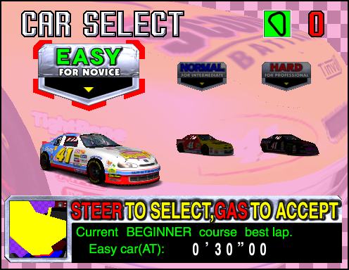 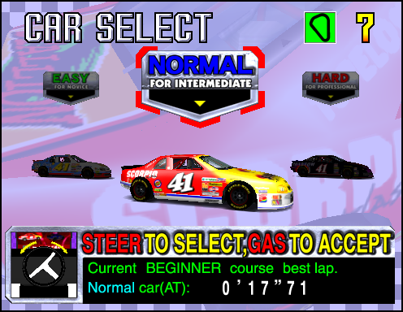 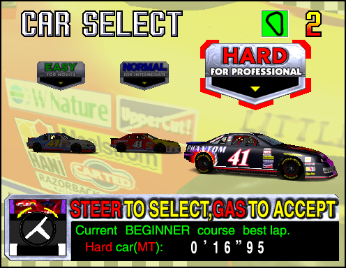
The 'Chum's Gum Racing' car, with its childish branding and grippy steering, takes the slot of 'Easy' car. 'Scorpio Batteries Racing' is a middle of the road kind of drive, and takes the 'Normal' car slot. Finally, the brutally fast and difficult to control 'Phantom Racing' takes the
'Hard' car. There's technically another choice besides these, but we'll get there...
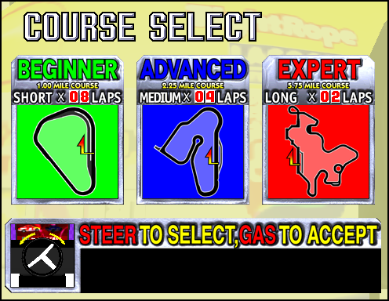
As with the previous game, you've also got 3 tracks to choose from; Beginner, Advanced and Expert.
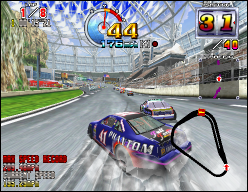
|
Beginner Course - Astro Waterfall Speedway
A speedway within a giant nature conservation dome, this course is the typical NASCAR style oval, much like the Three Seven Speedway from the first game. By default, it's an 8 lap race with 40 drivers.
BGM: 'SLINGSHOT'
|
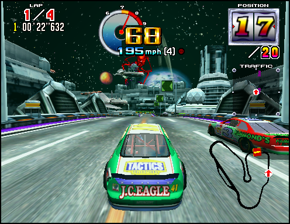
|
Advanced Course - Joypolis 2020 Amusement Park
The theme park of the future, which hits a little less in the year 2024. The track runs through various attractions, such as a haunted house, rollercoaster, and sci-fi battle scene (named 'Space Haneda', presumably as a nod to Space Harrier.)
By default, it's a 4 lap race with 20 drivers.
BGM: 'I CAN DO IT'
|
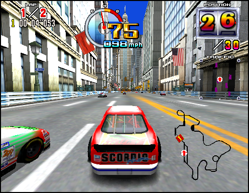
|
Expert Course - New Joke City
Race through 'the center of the world economy', in an extremely long course across 2 laps. Known and feared for the extremely long right turn towards the end of the track.
BGM: 'SKYSCRAPER SEQUENCE'
|
And that's the gist of it. The intent of this page isn't really to do a deep-dive into the game's mechanics, or even to review it; I can summarise my own thoughts pretty easily as 'Daytona USA 2 is the coolest game ever', and leave it there. One thing you'll notice
is that the game's got a subtitle: Battle on the Edge. And that's an important distinction, because there's actually two versions of this game!
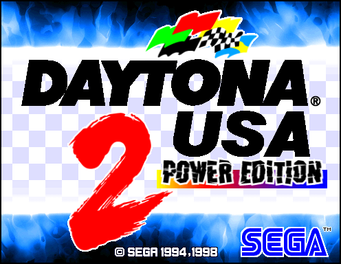
Released - seemingly exclusively in Japan - at the end of 1998 and only 7 months after the original, Daytona USA 2: Power Edition changes a few things. Some big, some small, some completely pointless.
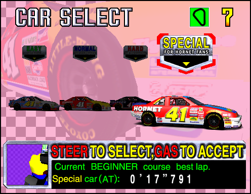 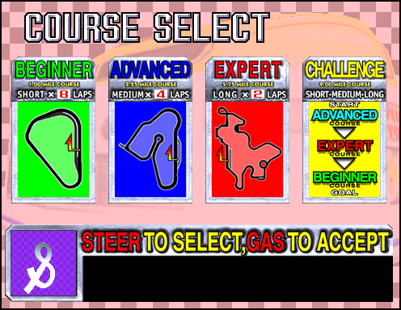
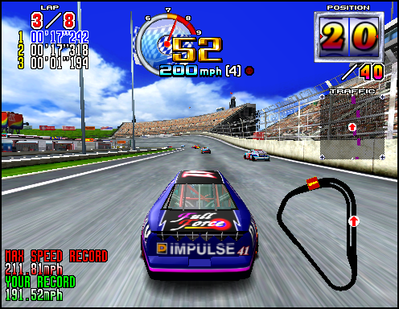
For one thing, there's a new car - the Hornet Special. This car is based on the Hornet from the original Daytona USA... and is intended to reflect the handling model of the original game too, for those who prefer it. Admittedly, while I can drive totally fine
in Daytona USA, I've never quite gotten along with the Hornet in Power Edition, but that could just be my wonky emulator controls.
There's also a 'new' track; the Challenge course, also known as the Mix course in Japan. This track has you race through a single lap of every course in the game, with each seamlessly connected a la OutRun. It's actually pretty cool, and certainly a fun challenge for Daytona 2 pros.
Besides that, there's a few other changes too. Certain course layouts have been adjusted, such as making that one really long turn on the Expert course slightly less brutal, and some graphics have recieved a facelift. The Easy level car, 'Chums Gum Racing', now has the
slightly less patronizing sponsor 'JC Eagle Racing'. CPU drivers are also generally considered to be more aggressive in this version. Perhaps the biggest change is the Beginner Course, which is no longer set inside a bio-dome, and instead is set on a slightly more generic NASCAR speedway. Which is kind of a downgrade...
At any rate, whichever version of Daytona USA 2 you play, you're probably gonna have a good time. And fortunately, there's even a modern home port of it now!
Unfortunately, it's part of SEGA's continuing trend of putting much-wanted arcade ports in Like a Dragon games - it
appears in
Like a Dragon Gaiden: The Man Who Erased His Name, under the expired-license friendly name
'SEGA Racing Classic 2'.